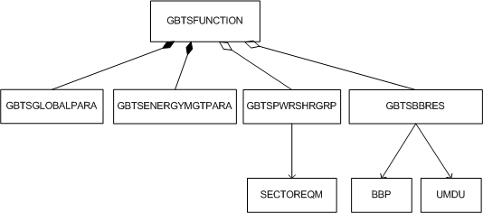

This section describes the functions and concepts of the GBTS MOM and also provides the managed object model (MOM) view and managed objects (MOs) related to the GBTS.
Functions and Concepts
GBTSFunction
GBTSFunction is the root node of a GBTS function.
GSM Multi-Carrier BTS Standards
The GSM multi-carrier BTS standards are ETSI standards for RF modules, including CLASS0, CLASS1, CLASS2, and MSR.
Multimode Dynamic Power Sharing
The multimode dynamic power sharing consists of GSM/UMTS dynamic power sharing and GSM/LTE dynamic power sharing.
The GSM/UMTS dynamic power sharing applies to GSM/UMTS dual-mode base stations. If GSM TRXs and UMTS TRXs share a power amplifier (PA), the UMTS HSDPA cells can share idle power of TRXs in GSM cells. This efficiently improves power utilization efficiency and UMTS network quality if GSM and UMTS networks have different peak hours or imbalanced traffic. In the case of traffic burst in GSM cells, the GSM cells can get back their power shared with the UMTS HSDPA cells.
The GSM/LTE dynamic power sharing applies to GSM/LTE dual-mode base stations. If GSM cells under such a base station experience low traffic load, they share their idle power with LTE cells. When the GSM cell load increases to a certain value, the GSM cells can get back their power shared with the LTE cells.
Backup Power Saving
The backup power saving function takes different measures to prolong the operating period of the eGBTS in case of mains power failure due to power outage, snow disaster, or earthquake, thereby ensuring sufficient time for repairing the equipment and improving the network robustness.
Intelligent Voltage Regulation
The intelligent voltage regulation function can adjust the working voltage of the PA of a multi-carrier module based on its output power. This improves the working efficiency of the PA and reduces the eGBTS power consumption.
GBTS Baseband Resource
Resources required by an eGBTS to process baseband services in a cell or on a TRX are collectively referred to as GBTS baseband resources. A multimode baseband processing board can provide baseband resources for different RATs. Adding GBTS baseband resource objects to the corresponding multimode baseband processing board provides baseband resources for GSM TRXs.
MOM View
MOM view is a subset of the eGBTS MOM and provides MOs related to an eGBTS.

In the GBTS MOM view, all MOs are attributed to the GBTSFUNCTION MO. These MOs are described as follows:
- For details about the GBTSFUNCTION MO, see GBTSFunction MOM Description. One GBTSFUNCTION MO corresponds to one GBTSGLOBALPARA MO and one GBTSENERGYMGTPARA MO.
- GBTSGLOBALPARA defines the attributes of GBTSFunction global parameters, including the GSM multi-carrier BTS standards.
- GBTSENERGYMGTPARA defines GBTSFunction energy management parameters. The backup power can be saved by configuring the parameters under this MO when the eGBTS experiences an external power failure. The GBTSFunction energy management parameters are classified into two types: backup power saving parameters and PA intelligent adjustment voltage parameters.
- GBTSPWRSHRGRP defines the multimode dynamic power sharing group served by the GBTSFunction. The multimode dynamic power sharing function can be enabled by configuring the parameters under this MO. The multimode dynamic power sharing consists of GSM/UMTS dynamic power sharing and GSM/LTE dynamic power sharing. One GBTSFUNCTION MO can be configured with a maximum of 48 GBTSPWRSHRGRP MOs, and one GBTSPWRSHRGR MO can be configured with a maximum of two SECTOREQM MOs.
- GBTSBBRES defines GBTS
baseband resources. Adding GBTS baseband resource objects to the associated
multimode baseband processing board can provide baseband resources
for GSM TRXs.
- eGBTS with the UMPT/UMDU functioning as the main control board:
- For eGBTS with the UMPT functioning as the main control board, one GBTSFUNCTION MO can be configured with a maximum of six GBTSBBRES MOs.
- For eGBTS with the UMDU functioning as the main control board, one GBTSFUNCTION MO can be configured with a maximum of one GBTSBBRES MOs.
- One GBTSBBRES MO must be bound to only one configured BBP or UMDU.
- eGBTS with the GTMUb functioning as the main control board: One GBTSFUNCTION MO can be configured with a maximum of two GBTSBBRES MOs, and one GBTSBBRES MO must be bound to only one configured BBP.
- eGBTS with the UMPT/UMDU functioning as the main control board:
For details about SECTOREQM and BBP MOs, see Sector MOM Description and BBU MOM Description, respectively.